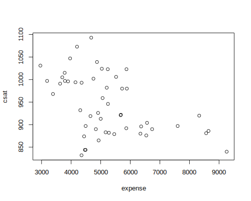
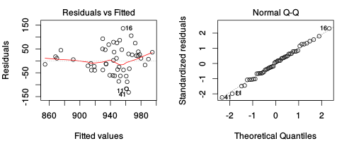
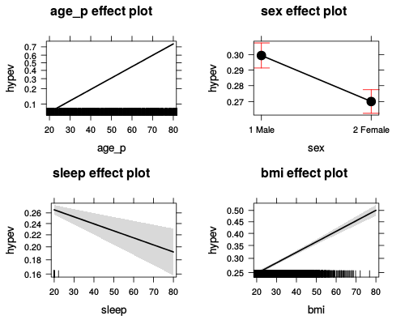

Regression Models in R
Table of Contents
Introduction
Workshop description
- This is an intermediate/advanced R course
- Appropriate for those with basic knowledge of R
- This is not a statistics course!
- Learning objectives:
- Learn the R formula interface
- Specify factor contrasts to test specific hypotheses
- Perform model comparisons
- Run and interpret variety of regression models in R
Materials and Setup labsetup
Lab computer users: Log in using the user name and password on the board to your left.
Laptop users:
- you should have R installed–if not, open a web browser and go to http://cran.r-project.org/ and download and install it
- also helpful to install RStudo (download from http://rstudio.com/)
Everyone:
- Download materials from http://tutorials.iq.harvard.edu/R/Rstatistics.zip
- Extract materials from RStatistics.zip (on lab machines right-click -> WinZip -> Extract to here) and move to your desktop.
Launch RStudio labsetup
- Open the RStudio program from the Windows start menu
- Open up today's R script
- In RStudio, Go to File => Open Script
- Locate and open the
Rstatistics.Rscript in the Rstatistics folder on your desktop
- Go to Tools => Set working directory => To source file location (more on the working directory later)
- I encourage you to add your own notes to this file!
Set working directory
It is often helpful to start your R session by setting your working directory so you don't have to type the full path names to your data and other files
# set the working directory # setwd("~/Desktop/Rstatistics") # setwd("C:/Users/dataclass/Desktop/Rstatistics")
> # set the working directory
> # setwd("~/Desktop/Rstatistics")
> # setwd("C:/Users/dataclass/Desktop/Rstatistics")
>
You might also start by listing the files in your working directory
getwd() # where am I? list.files("dataSets") # files in the dataSets folder
> getwd() # where am I?
[1] "/home/izahn/Documents/Work/IQSS/Classes/IQSS_Stats_Workshops/R/Rstatistics"
> list.files("dataSets") # files in the dataSets folder
[1] "Exam.rds" "NatHealth2008MI" "NatHealth2011.rds"
[4] "states.dta" "states.rds"
>
Load the states data
The states.dta data comes from http://anawida.de/teach/SS14/anawida/4.linReg/data/states.dta.txt and appears to have originally appeared in Statistics with Stata by Lawrence C. Hamilton.
# read the states data states.data <- readRDS("dataSets/states.rds") #get labels states.info <- data.frame(attributes(states.data)[c("names", "var.labels")]) #look at last few labels tail(states.info, 8)
> # read the states data
> states.data <- readRDS("dataSets/states.rds")
> #get labels
> states.info <- data.frame(attributes(states.data)[c("names", "var.labels")])
> #look at last few labels
> tail(states.info, 8)
names var.labels
14 csat Mean composite SAT score
15 vsat Mean verbal SAT score
16 msat Mean math SAT score
17 percent % HS graduates taking SAT
18 expense Per pupil expenditures prim&sec
19 income Median household income, $1,000
20 high % adults HS diploma
21 college % adults college degree
>
Linear regression
Examine the data before fitting models
Start by examining the data to check for problems.
# summary of expense and csat columns, all rows sts.ex.sat <- subset(states.data, select = c("expense", "csat")) summary(sts.ex.sat) # correlation between expense and csat cor(sts.ex.sat)
> # summary of expense and csat columns, all rows
> sts.ex.sat <- subset(states.data, select = c("expense", "csat"))
> summary(sts.ex.sat)
expense csat
Min. :2960 Min. : 832
1st Qu.:4352 1st Qu.: 888
Median :5000 Median : 926
Mean :5236 Mean : 944
3rd Qu.:5794 3rd Qu.: 997
Max. :9259 Max. :1093
> # correlation between expense and csat
> cor(sts.ex.sat)
expense csat
expense 1.000 -0.466
csat -0.466 1.000
>
Plot the data before fitting models
Plot the data to look for multivariate outliers, non-linear relationships etc.
# scatter plot of expense vs csat plot(sts.ex.sat)

Linear regression example
- Linear regression models can be fit with the
lm()function - For example, we can use
lmto predict SAT scores based on per-pupal expenditures:
# Fit our regression model sat.mod <- lm(csat ~ expense, # regression formula data=states.data) # data set # Summarize and print the results summary(sat.mod) # show regression coefficients table
> # Fit our regression model
> sat.mod <- lm(csat ~ expense, # regression formula
+ data=states.data) # data set
> # Summarize and print the results
> summary(sat.mod) # show regression coefficients table
Call:
lm(formula = csat ~ expense, data = states.data)
Residuals:
Min 1Q Median 3Q Max
-131.81 -38.08 5.61 37.85 136.50
Coefficients:
Estimate Std. Error t value Pr(>|t|)
(Intercept) 1060.73244 32.70090 32.44 < 2e-16
expense -0.02228 0.00604 -3.69 0.00056
Residual standard error: 59.8 on 49 degrees of freedom
Multiple R-squared: 0.217, Adjusted R-squared: 0.201
F-statistic: 13.6 on 1 and 49 DF, p-value: 0.000563
>
Why is the association between expense and SAT scores negative?
Many people find it surprising that the per-capita expenditure on students is negatively related to SAT scores. The beauty of multiple regression is that we can try to pull these apart. What would the association between expense and SAT scores be if there were no difference among the states in the percentage of students taking the SAT?
summary(lm(csat ~ expense + percent, data = states.data))
> summary(lm(csat ~ expense + percent, data = states.data))
Call:
lm(formula = csat ~ expense + percent, data = states.data)
Residuals:
Min 1Q Median 3Q Max
-62.92 -24.32 1.74 15.50 75.62
Coefficients:
Estimate Std. Error t value Pr(>|t|)
(Intercept) 989.8074 18.3958 53.81 < 2e-16
expense 0.0086 0.0042 2.05 0.046
percent -2.5377 0.2249 -11.28 4.2e-15
Residual standard error: 31.6 on 48 degrees of freedom
Multiple R-squared: 0.786, Adjusted R-squared: 0.777
F-statistic: 88 on 2 and 48 DF, p-value: <2e-16
>
The lm class and methods
OK, we fit our model. Now what?
- Examine the model object:
class(sat.mod)
names(sat.mod)
methods(class = class(sat.mod))[1:9]
> class(sat.mod) [1] "lm" > names(sat.mod) [1] "coefficients" "residuals" "effects" "rank" [5] "fitted.values" "assign" "qr" "df.residual" [9] "xlevels" "call" "terms" "model" > methods(class = class(sat.mod))[1:9] [1] "add1.lm" "alias.lm" [3] "anova.lm" "case.names.lm" [5] "coerce,oldClass,S3-method" "confint.lm" [7] "cooks.distance.lm" "deviance.lm" [9] "dfbeta.lm" >
- Use function methods to get more information about the fit
confint(sat.mod) # hist(residuals(sat.mod))
> confint(sat.mod)
2.5 % 97.5 %
(Intercept) 995.0175 1126.4474
expense -0.0344 -0.0101
> # hist(residuals(sat.mod))
>
Linear Regression Assumptions
- Ordinary least squares regression relies on several assumptions, including that the residuals are normally distributed and homoscedastic, the errors are independent and the relationships are linear.
- Investigate these assumptions visually by plotting your model:
par(mar = c(4, 4, 2, 2), mfrow = c(1, 2)) #optional plot(sat.mod, which = c(1, 2)) # "which" argument optional

Comparing models
Do congressional voting patterns predict SAT scores over and above expense? Fit two models and compare them:
# fit another model, adding house and senate as predictors sat.voting.mod <- lm(csat ~ expense + house + senate, data = na.omit(states.data)) sat.mod <- update(sat.mod, data=na.omit(states.data)) # compare using the anova() function anova(sat.mod, sat.voting.mod) coef(summary(sat.voting.mod))
> # fit another model, adding house and senate as predictors
> sat.voting.mod <- lm(csat ~ expense + house + senate,
+ data = na.omit(states.data))
> sat.mod <- update(sat.mod, data=na.omit(states.data))
> # compare using the anova() function
> anova(sat.mod, sat.voting.mod)
Analysis of Variance Table
Model 1: csat ~ expense
Model 2: csat ~ expense + house + senate
Res.Df RSS Df Sum of Sq F Pr(>F)
1 46 169050
2 44 149284 2 19766 2.91 0.065
> coef(summary(sat.voting.mod))
Estimate Std. Error t value Pr(>|t|)
(Intercept) 1082.9344 38.63381 28.03 1.07e-29
expense -0.0187 0.00969 -1.93 6.00e-02
house -1.4424 0.60048 -2.40 2.06e-02
senate 0.4982 0.51356 0.97 3.37e-01
>
Exercise 0: least squares regression
Use the states.rds data set. Fit a model predicting energy consumed per capita (energy) from the percentage of residents living in metropolitan areas (metro). Be sure to
- Examine/plot the data before fitting the model
- Print and interpret the model
summary plotthe model to look for deviations from modeling assumptions
Select one or more additional predictors to add to your model and repeat steps 1-3. Is this model significantly better than the model with metro as the only predictor?
Interactions and factors
Modeling interactions
Interactions allow us assess the extent to which the association between one predictor and the outcome depends on a second predictor. For example: Does the association between expense and SAT scores depend on the median income in the state?
#Add the interaction to the model sat.expense.by.percent <- lm(csat ~ expense*income, data=states.data) #Show the results coef(summary(sat.expense.by.percent)) # show regression coefficients table
> #Add the interaction to the model
> sat.expense.by.percent <- lm(csat ~ expense*income,
+ data=states.data)
> #Show the results
> coef(summary(sat.expense.by.percent)) # show regression coefficients table
Estimate Std. Error t value Pr(>|t|)
(Intercept) 1380.36423 172.086252 8.02 0.000000000237
expense -0.06384 0.032701 -1.95 0.056878369245
income -10.49785 4.991463 -2.10 0.040832525071
expense:income 0.00138 0.000864 1.60 0.115539488253
>
Regression with categorical predictors
Let's try to predict SAT scores from region, a categorical variable. Note that you must make sure R does not think your categorical variable is numeric.
# make sure R knows region is categorical str(states.data$region) states.data$region <- factor(states.data$region) #Add region to the model sat.region <- lm(csat ~ region, data=states.data) #Show the results coef(summary(sat.region)) # show regression coefficients table anova(sat.region) # show ANOVA table
> # make sure R knows region is categorical
> str(states.data$region)
Factor w/ 4 levels "West","N. East",..: 3 1 1 3 1 1 2 3 NA 3 ...
> states.data$region <- factor(states.data$region)
> #Add region to the model
> sat.region <- lm(csat ~ region,
+ data=states.data)
> #Show the results
> coef(summary(sat.region)) # show regression coefficients table
Estimate Std. Error t value Pr(>|t|)
(Intercept) 946.3 14.8 63.958 1.35e-46
regionN. East -56.8 23.1 -2.453 1.80e-02
regionSouth -16.3 19.9 -0.819 4.17e-01
regionMidwest 63.8 21.4 2.986 4.51e-03
> anova(sat.region) # show ANOVA table
Analysis of Variance Table
Response: csat
Df Sum Sq Mean Sq F value Pr(>F)
region 3 82049 27350 9.61 0.000049
Residuals 46 130912 2846
>
Again, make sure to tell R which variables are categorical by converting them to factors!
Setting factor reference groups and contrasts
In the previous example we use the default contrasts for region. The default in R is treatment contrasts, with the first level as the reference. We can change the reference group or use another coding scheme using the C function.
# print default contrasts contrasts(states.data$region) # change the reference group coef(summary(lm(csat ~ C(region, base=4), data=states.data))) # change the coding scheme coef(summary(lm(csat ~ C(region, contr.helmert), data=states.data)))
> # print default contrasts
> contrasts(states.data$region)
N. East South Midwest
West 0 0 0
N. East 1 0 0
South 0 1 0
Midwest 0 0 1
> # change the reference group
> coef(summary(lm(csat ~ C(region, base=4),
+ data=states.data)))
Estimate Std. Error t value Pr(>|t|)
(Intercept) 1010.1 15.4 65.59 4.30e-47
C(region, base = 4)1 -63.8 21.4 -2.99 4.51e-03
C(region, base = 4)2 -120.5 23.5 -5.12 5.80e-06
C(region, base = 4)3 -80.1 20.4 -3.93 2.83e-04
> # change the coding scheme
> coef(summary(lm(csat ~ C(region, contr.helmert),
+ data=states.data)))
Estimate Std. Error t value Pr(>|t|)
(Intercept) 943.99 7.71 122.498 1.69e-59
C(region, contr.helmert)1 -28.38 11.57 -2.453 1.80e-02
C(region, contr.helmert)2 4.02 5.88 0.684 4.98e-01
C(region, contr.helmert)3 22.03 4.45 4.955 1.02e-05
>
See also ?contrasts, ?contr.treatment, and ?relevel.
Exercise 1: interactions and factors
Use the states data set.
- Add on to the regression equation that you created in exercise 1 by generating an interaction term and testing the interaction.
- Try adding region to the model. Are there significant differences across the four regions?
Regression with binary outcomes
Logistic regression
This far we have used the lm function to fit our regression models. lm is great, but limited–in particular it only fits models for continuous dependent variables. For categorical dependent variables we can use the glm() function.
For these models we will use a different dataset, drawn from the National Health Interview Survey. From the CDC website:
The National Health Interview Survey (NHIS) has monitored the health of the nation since 1957. NHIS data on a broad range of health topics are collected through personal household interviews. For over 50 years, the U.S. Census Bureau has been the data collection agent for the National Health Interview Survey. Survey results have been instrumental in providing data to track health status, health care access, and progress toward achieving national health objectives.
Load the National Health Interview Survey data:
NH11 <- readRDS("dataSets/NatHealth2011.rds") labs <- attributes(NH11)$labels
> NH11 <- readRDS("dataSets/NatHealth2011.rds")
> labs <- attributes(NH11)$labels
>
Logistic regression example
Let's predict the probability of being diagnosed with hypertension based on age, sex, sleep, and bmi
str(NH11$hypev) # check stucture of hypev levels(NH11$hypev) # check levels of hypev # collapse all missing values to NA NH11$hypev <- factor(NH11$hypev, levels=c("2 No", "1 Yes")) # run our regression model hyp.out <- glm(hypev~age_p+sex+sleep+bmi, data=NH11, family="binomial") coef(summary(hyp.out))
> str(NH11$hypev) # check stucture of hypev
Factor w/ 5 levels "1 Yes","2 No",..: 2 2 1 2 2 1 2 2 1 2 ...
> levels(NH11$hypev) # check levels of hypev
[1] "1 Yes" "2 No" "7 Refused"
[4] "8 Not ascertained" "9 Don't know"
> # collapse all missing values to NA
> NH11$hypev <- factor(NH11$hypev, levels=c("2 No", "1 Yes"))
> # run our regression model
> hyp.out <- glm(hypev~age_p+sex+sleep+bmi,
+ data=NH11, family="binomial")
> coef(summary(hyp.out))
Estimate Std. Error z value Pr(>|z|)
(Intercept) -4.26947 0.056495 -75.57 0.00e+00
age_p 0.06070 0.000823 73.78 0.00e+00
sex2 Female -0.14403 0.026798 -5.37 7.68e-08
sleep -0.00704 0.001640 -4.29 1.78e-05
bmi 0.01857 0.000951 19.53 6.49e-85
>
Logistic regression coefficients
Generalized linear models use link functions, so raw coefficients are difficult to interpret. For example, the age coefficient of .06 in the previous model tells us that for every one unit increase in age, the log odds of hypertension diagnosis increases by 0.06. Since most of us are not used to thinking in log odds this is not too helpful!
One solution is to transform the coefficients to make them easier to interpret
hyp.out.tab <- coef(summary(hyp.out)) hyp.out.tab[, "Estimate"] <- exp(coef(hyp.out)) hyp.out.tab
> hyp.out.tab <- coef(summary(hyp.out))
> hyp.out.tab[, "Estimate"] <- exp(coef(hyp.out))
> hyp.out.tab
Estimate Std. Error z value Pr(>|z|)
(Intercept) 0.014 0.056495 -75.57 0.00e+00
age_p 1.063 0.000823 73.78 0.00e+00
sex2 Female 0.866 0.026798 -5.37 7.68e-08
sleep 0.993 0.001640 -4.29 1.78e-05
bmi 1.019 0.000951 19.53 6.49e-85
>
Generating predicted values
In addition to transforming the log-odds produced by glm to odds, we can use the predict() function to make direct statements about the predictors in our model. For example, we can ask "How much more likely is a 63 year old female to have hypertension compared to a 33 year old female?".
# Create a dataset with predictors set at desired levels predDat <- with(NH11, expand.grid(age_p = c(33, 63), sex = "2 Female", bmi = mean(bmi, na.rm = TRUE), sleep = mean(sleep, na.rm = TRUE))) # predict hypertension at those levels cbind(predDat, predict(hyp.out, type = "response", se.fit = TRUE, interval="confidence", newdata = predDat))
> # Create a dataset with predictors set at desired levels > predDat <- with(NH11, + expand.grid(age_p = c(33, 63), + sex = "2 Female", + bmi = mean(bmi, na.rm = TRUE), + sleep = mean(sleep, na.rm = TRUE))) > # predict hypertension at those levels > cbind(predDat, predict(hyp.out, type = "response", + se.fit = TRUE, interval="confidence", + newdata = predDat)) age_p sex bmi sleep fit se.fit residual.scale 1 33 2 Female 29.9 7.86 0.129 0.00285 1 2 63 2 Female 29.9 7.86 0.478 0.00482 1 >
This tells us that a 33 year old female has a 13% probability of having been diagnosed with hypertension, while and 63 year old female has a 48% probability of having been diagnosed.
Packages for computing and graphing predicted values
Instead of doing all this ourselves, we can use the effects package to compute quantities of interest for us (cf. the Zelig package).
library(effects)
plot(allEffects(hyp.out))

Exercise 2: logistic regression
Use the NH11 data set that we loaded earlier.
- Use glm to conduct a logistic regression to predict ever worked (everwrk) using age (agep) and marital status (rmaritl).
- Predict the probability of working for each level of marital status.
Note that the data is not perfectly clean and ready to be modeled. You will need to clean up at least some of the variables before fitting the model.
Multilevel Modeling
Multilevel modeling overview
- Multi-level (AKA hierarchical) models are a type of mixed-effects models
- Used to model variation due to group membership where the goal is to generalize to a population of groups
- Can model different intercepts and/or slopes for each group
- Mixed-effecs models include two types of predictors: fixed-effects and random effects
- Fixed-effects – observed levels are of direct interest (.e.g, sex, political party…)
- Random-effects – observed levels not of direct interest: goal is to make inferences to a population represented by observed levels
- In R the lme4 package is the most popular for mixed effects models
- Use the
lmerfunction for liner mixed models,glmerfor generalized mixed models
- Use the
library(lme4)
> library(lme4) >
The Exam data
The Exam data set contans exam scores of 4,059 students from 65 schools in Inner London. The variable names are as follows:
| variable | Description |
|---|---|
| school | School ID - a factor. |
| normexam | Normalized exam score. |
| schgend | School gender - a factor. Levels are 'mixed', 'boys', and 'girls'. |
| schavg | School average of intake score. |
| vr | Student level Verbal Reasoning (VR) score band at intake - 'bottom 25%', 'mid 50%', and 'top 25%'. |
| intake | Band of student's intake score - a factor. Levels are 'bottom 25%', 'mid 50%' and 'top 25%'./ |
| standLRT | Standardised LR test score. |
| sex | Sex of the student - levels are 'F' and 'M'. |
| type | School type - levels are 'Mxd' and 'Sngl'. |
| student | Student id (within school) - a factor |
Exam <- readRDS("dataSets/Exam.rds")
> Exam <- readRDS("dataSets/Exam.rds")
>
The null model and ICC
As a preliminary step it is often useful to partition the variance in the dependent variable into the various levels. This can be accomplished by running a null model (i.e., a model with a random effects grouping structure, but no fixed-effects predictors).
# null model, grouping by school but not fixed effects. Norm1 <-lmer(normexam ~ 1 + (1|school), data=Exam, REML = FALSE) summary(Norm1)
> # null model, grouping by school but not fixed effects.
> Norm1 <-lmer(normexam ~ 1 + (1|school),
+ data=Exam, REML = FALSE)
> summary(Norm1)
Linear mixed model fit by maximum likelihood ['lmerMod']
Formula: normexam ~ 1 + (1 | school)
Data: Exam
AIC BIC logLik deviance df.resid
10826 10844 -5410 10820 3984
Scaled residuals:
Min 1Q Median 3Q Max
-3.902 -0.646 0.003 0.698 3.636
Random effects:
Groups Name Variance Std.Dev.
school (Intercept) 0.169 0.412
Residual 0.848 0.921
Number of obs: 3987, groups: school, 65
Fixed effects:
Estimate Std. Error t value
(Intercept) -0.0141 0.0538 -0.26
>
The is .169/(.169 + .848) = .17: 17% of the variance is at the school level.
Adding fixed-effects predictors
Predict exam scores from student's standardized tests scores
Norm2 <-lmer(normexam~standLRT + (1|school), data=Exam, REML = FALSE) summary(Norm2)
> Norm2 <-lmer(normexam~standLRT + (1|school),
+ data=Exam,
+ REML = FALSE)
> summary(Norm2)
Linear mixed model fit by maximum likelihood ['lmerMod']
Formula: normexam ~ standLRT + (1 | school)
Data: Exam
AIC BIC logLik deviance df.resid
9143 9168 -4568 9135 3954
Scaled residuals:
Min 1Q Median 3Q Max
-3.700 -0.625 0.024 0.678 3.262
Random effects:
Groups Name Variance Std.Dev.
school (Intercept) 0.0919 0.303
Residual 0.5670 0.753
Number of obs: 3958, groups: school, 65
Fixed effects:
Estimate Std. Error t value
(Intercept) 0.00121 0.04004 0.0
standLRT 0.56559 0.01265 44.7
Correlation of Fixed Effects:
(Intr)
standLRT 0.007
>
Multiple degree of freedom comparisons
As with lm and glm models, you can compare the two lmer models using the anova function.
anova(Norm1, Norm2)
Random slopes
Add a random effect of students' standardized test scores as well. Now in addition to estimating the distribution of intercepts across schools, we also estimate the distribution of the slope of exam on standardized test.
Norm3 <- lmer(normexam~standLRT + (standLRT|school), data=Exam, REML = FALSE) summary(Norm3)
> Norm3 <- lmer(normexam~standLRT + (standLRT|school), data=Exam,
+ REML = FALSE)
> summary(Norm3)
Linear mixed model fit by maximum likelihood ['lmerMod']
Formula: normexam ~ standLRT + (standLRT | school)
Data: Exam
AIC BIC logLik deviance df.resid
9108 9146 -4548 9096 3952
Scaled residuals:
Min 1Q Median 3Q Max
-3.813 -0.634 0.033 0.673 3.452
Random effects:
Groups Name Variance Std.Dev. Corr
school (Intercept) 0.0899 0.300
standLRT 0.0141 0.119 0.51
Residual 0.5552 0.745
Number of obs: 3958, groups: school, 65
Fixed effects:
Estimate Std. Error t value
(Intercept) -0.0122 0.0397 -0.31
standLRT 0.5586 0.0199 28.08
Correlation of Fixed Effects:
(Intr)
standLRT 0.371
>
Test the significance of the random slope
To test the significance of a random slope just compare models with and without the random slope term
anova(Norm2, Norm3)
> anova(Norm2, Norm3)
Data: Exam
Models:
Norm2: normexam ~ standLRT + (1 | school)
Norm3: normexam ~ standLRT + (standLRT | school)
Df AIC BIC logLik deviance Chisq Chi Df Pr(>Chisq)
Norm2 4 9143 9169 -4568 9135
Norm3 6 9108 9146 -4548 9096 39 2 0.0000000035
>
Exercise 3: multilevel modeling
Use the dataset, bh1996:
data(bh1996, package="multilevel")
From the data documentation:
Variables are Cohesion (COHES), Leadership Climate (LEAD), Well-Being (WBEING) and Work Hours (HRS). Each of these variables has two variants - a group mean version that replicates each group mean for every individual, and a within-group version where the group mean is subtracted from each individual response. The group mean version is designated with a G. (e.g., G.HRS), and the within-group version is designated with a W. (e.g., W.HRS).
- Create a null model predicting wellbeing ("WBEING")
- Calculate the ICC for your null model
- Run a second multi-level model that adds two individual-level predictors, average number of hours worked ("HRS") and leadership skills ("LEAD") to the model and interpret your output.
- Now, add a random effect of average number of hours worked ("HRS") to the model and interpret your output. Test the significance of this random term.
Exercise solutions prototype
Exercise 0 prototype
Use the states.rds data set.
states <- readRDS("dataSets/states.rds")
Fit a model predicting energy consumed per capita (energy) from the percentage of residents living in metropolitan areas (metro). Be sure to
- Examine/plot the data before fitting the model
states.en.met <- subset(states, select = c("metro", "energy")) summary(states.en.met) plot(states.en.met) cor(states.en.met, use="pairwise")
- Print and interpret the model
summary
mod.en.met <- lm(energy ~ metro, data = states)
summary(mod.en.met)
plotthe model to look for deviations from modeling assumptions
plot(mod.en.met)
Select one or more additional predictors to add to your model and repeat steps 1-3. Is this model significantly better than the model with metro as the only predictor?
states.en.met.pop.wst <- subset(states, select = c("energy", "metro", "pop", "waste")) summary(states.en.met.pop.wst) plot(states.en.met.pop.wst) cor(states.en.met.pop.wst, use = "pairwise") mod.en.met.pop.waste <- lm(energy ~ metro + pop + waste, data = states) summary(mod.en.met.pop.waste) anova(mod.en.met, mod.en.met.pop.waste)
Exercise 1: prototype
Use the states data set.
- Add on to the regression equation that you created in exercise 1 by generating an interaction term and testing the interaction.
mod.en.metro.by.waste <- lm(energy ~ metro * waste, data = states)
- Try adding a region to the model. Are there significant differences across the four regions?
mod.en.region <- lm(energy ~ metro * waste + region, data = states)
anova(mod.en.region)
Exercise 2 prototype
Use the NH11 data set that we loaded earlier. Note that the data is not perfectly clean and ready to be modeled. You will need to clean up at least some of the variables before fitting the model.
- Use glm to conduct a logistic regression to predict ever worked (everwrk) using age (agep) and marital status (rmaritl).
nh11.wrk.age.mar <- subset(NH11, select = c("everwrk", "age_p", "r_maritl")) summary(nh11.wrk.age.mar) NH11 <- transform(NH11, everwrk = factor(everwrk, levels = c("1 Yes", "2 No")), r_maritl = droplevels(r_maritl)) mod.wk.age.mar <- glm(everwrk ~ age_p + r_maritl, data = NH11, family = "binomial") summary(mod.wk.age.mar)
- Predict the probability of working for each level of marital status.
library(effects) data.frame(Effect("r_maritl", mod.wk.age.mar))
Exercise 3 prototype
Use the dataset, bh1996:
data(bh1996, package="multilevel")
From the data documentation:
Variables are Cohesion (COHES), Leadership Climate (LEAD), Well-Being (WBEING) and Work Hours (HRS). Each of these variables has two variants - a group mean version that replicates each group mean for every individual, and a within-group version where the group mean is subtracted from each individual response. The group mean version is designated with a G. (e.g., G.HRS), and the within-group version is designated with a W. (e.g., W.HRS).
Note that the group identifier is named "GRP".
- Create a null model predicting wellbeing ("WBEING")
library(lme4) mod.grp0 <- lmer(WBEING ~ 1 + (1 | GRP), data = bh1996) summary(mod.grp0)
=> library(lme4) > mod.grp0 <- lmer(WBEING ~ 1 + (1 | GRP), data = bh1996) > summary(mod.grp0) Linear mixed model fit by REML ['lmerMod'] Formula: WBEING ~ 1 + (1 | GRP) Data: bh1996
REML criterion at convergence: 19347
Scaled residuals: Min 1Q Median 3Q Max -3.322 -0.648 0.031 0.718 2.667
Random effects: Groups Name Variance Std.Dev. GRP (Intercept) 0.0358 0.189 Residual 0.7895 0.889 Number of obs: 7382, groups: GRP, 99
Fixed effects:
Estimate Std. Error t value
(Intercept) 2.7743 0.0222 125
>
=2. [@2] Calculate the ICC for your null model
ICC = .0358/(.0358 + .7895) = .04
- Run a second multi-level model that adds two individual-level predictors, average number of hours worked ("HRS") and leadership skills ("LEAD") to the model and interpret your output.
mod.grp1 <- lmer(WBEING ~ HRS + LEAD + (1 | GRP), data = bh1996) summary(mod.grp1)
- Now, add a random effect of average number of hours worked ("HRS") to the model and interpret your output. Test the significance of this random term.
mod.grp2 <- lmer(WBEING ~ HRS + LEAD + (1 + HRS | GRP), data = bh1996) anova(mod.grp1, mod.grp2)
Wrap-up
Help us make this workshop better!
- Please take a moment to fill out a very short
feedback form
- These workshops exist for you – tell us what you need!
- http://tinyurl.com/RstatisticsFeedback
Additional resources
- IQSS workshops: http://projects.iq.harvard.edu/rtc/filter_by/workshops
- IQSS statistical consulting: http://dss.iq.harvard.edu/
- Zelig
- Website: http://gking.harvard.edu/zelig
- Documentation: http://r.iq.harvard.edu/docs/zelig.pdf
- Ameila
- Website: http://gking.harvard.edu/Amelia/
- Documetation: http://r.iq.harvard.edu/docs/amelia/amelia.pdf